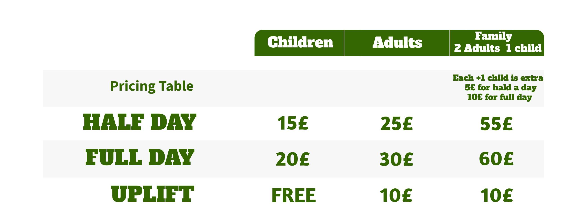
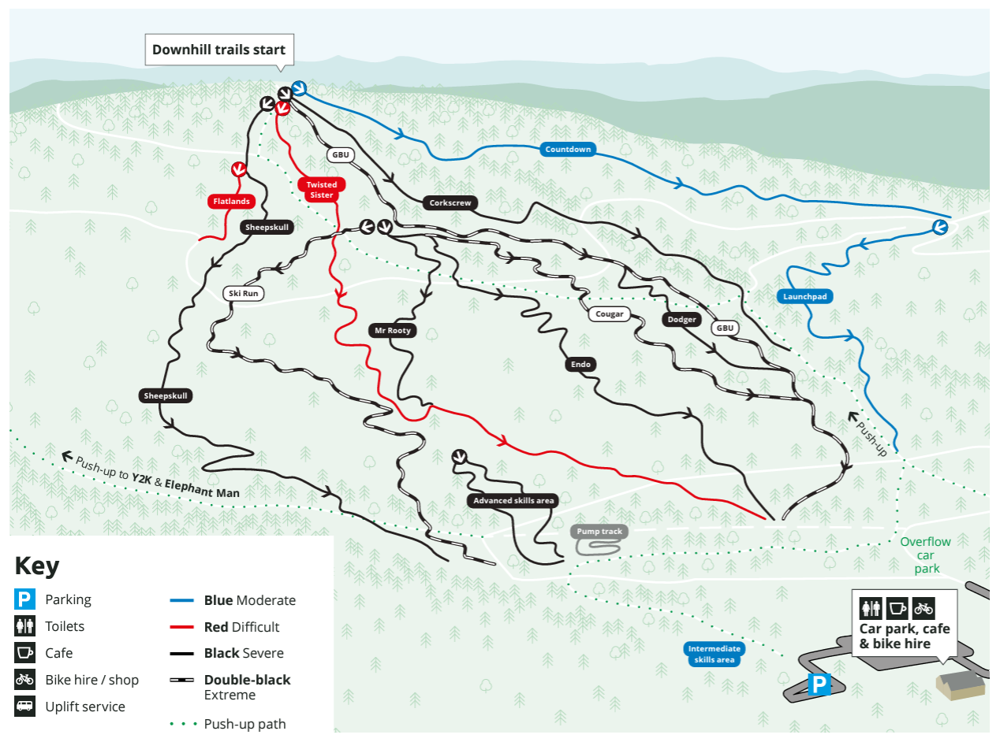
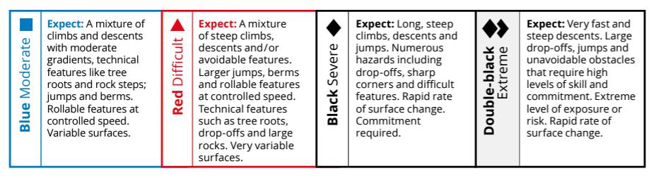

Our network of mountain bike trails offers a diverse mix of terrain, scenery, and adventure for riders of all levels. With trails ranging from beginner-friendly routes to advanced descents, we cater to all skill levels. Our trails feature berms, jumps, drops, and rock gardens, allowing riders to test their skills. The stunning landscapes and natural beauty surround our trails, making them perfect for photography. We provide detailed trail maps for easy planning and encourage riders to follow trail etiquette, yielding to uphill riders, staying on designated trails, and leaving no trace.
  